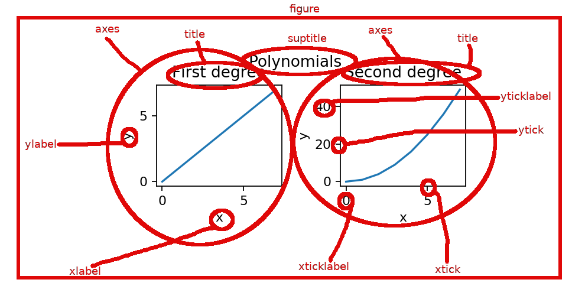

Matplotlib¶
To understand the data better it helps to be able to visualize it in various ways. Matplotlib is the most common low-level visualization library for Python. It can create line graphs, scatter plots, density plots, histograms, heatmaps, and so on. During this course we will not go deep into details of matplotlib, instead we have just some examples spread throughout the rest of this material of its use.
Simple figure¶
We will start with an example. The standard way to import matplotlib is as the abbreviation plt.
[1]:
# This is needed so that the plotted figures appear embedded in this notebook:
%matplotlib inline
import numpy as np
import matplotlib.pyplot as plt
---------------------------------------------------------------------------
ModuleNotFoundError Traceback (most recent call last)
<ipython-input-1-5601a8c46fd5> in <module>
1 # This is needed so that the plotted figures appear embedded in this notebook:
----> 2 get_ipython().run_line_magic('matplotlib', 'inline ')
3 import numpy as np
4 import matplotlib.pyplot as plt
~/virtualenv/python3.6.3/lib/python3.6/site-packages/IPython/core/interactiveshell.py in run_line_magic(self, magic_name, line, _stack_depth)
2305 kwargs['local_ns'] = sys._getframe(stack_depth).f_locals
2306 with self.builtin_trap:
-> 2307 result = fn(*args, **kwargs)
2308 return result
2309
</home/travis/virtualenv/python3.6.3/lib/python3.6/site-packages/decorator.py:decorator-gen-108> in matplotlib(self, line)
~/virtualenv/python3.6.3/lib/python3.6/site-packages/IPython/core/magic.py in <lambda>(f, *a, **k)
185 # but it's overkill for just that one bit of state.
186 def magic_deco(arg):
--> 187 call = lambda f, *a, **k: f(*a, **k)
188
189 if callable(arg):
~/virtualenv/python3.6.3/lib/python3.6/site-packages/IPython/core/magics/pylab.py in matplotlib(self, line)
97 print("Available matplotlib backends: %s" % backends_list)
98 else:
---> 99 gui, backend = self.shell.enable_matplotlib(args.gui)
100 self._show_matplotlib_backend(args.gui, backend)
101
~/virtualenv/python3.6.3/lib/python3.6/site-packages/IPython/core/interactiveshell.py in enable_matplotlib(self, gui)
3365 """
3366 from IPython.core import pylabtools as pt
-> 3367 gui, backend = pt.find_gui_and_backend(gui, self.pylab_gui_select)
3368
3369 if gui != 'inline':
~/virtualenv/python3.6.3/lib/python3.6/site-packages/IPython/core/pylabtools.py in find_gui_and_backend(gui, gui_select)
274 """
275
--> 276 import matplotlib
277
278 if gui and gui != 'auto':
ModuleNotFoundError: No module named 'matplotlib'
Let’s first have some data to visualize:
[2]:
a=np.array([2, 5, 7, 4, 7, 0, 3, 1, 9, 2])
---------------------------------------------------------------------------
NameError Traceback (most recent call last)
<ipython-input-2-d1ec0b68ad71> in <module>
----> 1 a=np.array([2, 5, 7, 4, 7, 0, 3, 1, 9, 2])
NameError: name 'np' is not defined
Below the plot function does the actual drawing of the graph, the rest of the function calls adjust some details of the figure. Make sure you understand how the values in the array a correspond to the features in the figure!
[3]:
plt.plot(a) # plot the points in the array a
plt.title("My first figure") # Add a title to the figure
plt.xlabel("My x-axis") # Give a label to the x-axis
plt.ylabel("My y-axis"); # Give a label to the y-axis
---------------------------------------------------------------------------
NameError Traceback (most recent call last)
<ipython-input-3-0dd8bd14b392> in <module>
----> 1 plt.plot(a) # plot the points in the array a
2 plt.title("My first figure") # Add a title to the figure
3 plt.xlabel("My x-axis") # Give a label to the x-axis
4 plt.ylabel("My y-axis"); # Give a label to the y-axis
NameError: name 'plt' is not defined
The key components of any matplotlib figure and the terminology is shown in the below image. The toplevel object is figure and it can contain one or more subfigures, which are strangely called axes in matplotlib.

In the above plot the x coordinates were implicitly set to the indices of the array a, that is, arange(10). Find out from the documentation of plt.plot how to specify the x coordinates explicitly. Find out also how to draw multiple graphs in one figure.
Make your main function plot the following two graphs. The first graphs has x coordinates 2,4,6,7 and y coordinates 4,3,5,1. The second graph has x coordinates 1,2,3,4 and y coordinates 4,2,3,1.
Add also a title and some labels for x axis and y axis. Note that in the non-interactive mode you have to call plt.show() for the figure to show.
Subfigures¶
One can create a figure with several subfigures using the command plt.subplots. It creates a grid of subfigures, where the number of rows and columns in the grid are given as parameters. It returns a pair of a figure object and an array containing the subfigures. In matplotlib the subfigures are called axes. Note the one letter difference: axis is singular and axes is plural of axis. So, you can think of axes as the pair of x-axis and y-axis that defines a two dimensional
(sub)figure. An example of this:
[4]:
fig, ax = plt.subplots(2,2)
print(ax.shape)
ax[0,0].plot(np.arange(6)) # top left
ax[0,1].plot(np.arange(6,0,-1)) # top right
ax[1,0].plot((-1)**np.arange(6)) # bottom left
ax[1,1].plot((-1)**np.arange(1,7)); # bottom right
---------------------------------------------------------------------------
NameError Traceback (most recent call last)
<ipython-input-4-72c8fe42aaa9> in <module>
----> 1 fig, ax = plt.subplots(2,2)
2 print(ax.shape)
3 ax[0,0].plot(np.arange(6)) # top left
4 ax[0,1].plot(np.arange(6,0,-1)) # top right
5 ax[1,0].plot((-1)**np.arange(6)) # bottom left
NameError: name 'plt' is not defined
Note that in this notebook we have used both the function plt.plot and the similar method plot of the axes object. The functions in plt namespace refer to the global variables that tell what is the current figure and what is the current axes. If we want to refer to multiple figures and/or axes’ at the same, we cannot use the function in plt. Instead, we can refer to each figure or axes object and use their methods to do the drawing.
Note the similarity to the random number generators in Python: the function like np.random.randn use the global random number generator. But if you want to use multiple random number generators at the same time, you first have to create the generators using the call rng1=np.random.RandomState(seed) and then use the method rng1.randn.
So with both random number generators and matplotlib plots you can choose between using one global object, and functions referring to it, at a time, or using several objects and their methods to refer to multiple objects at the same time.
Write function subfigures that creates a figure that has two subfigures (two axes in matplotlib parlance). The function gets an array a as a parameter. In the left subfigure draw using the plot method a graph, whose x coordinates are in the first column of a and the y coordinates are in the second column of a. In the right subfigure draw using the scatter method a set of points whose x coords are again in the first column of a and whose y coordinates are in the
second column of a. Additionally, the points should get their color from the third column of a, and size of the point from the fourth column of a. For this, use the c and s named parameters of scatter, respectively
Test your function subfigure from the main function.
Other data visualization libraries for Python¶
The development of matplotlib library started already in 2003. In some ways this old age shows as figures that don’t look very pretty compared to the figures created with more modern alternatives. Also, it can be quite complicated to create a simple figure. Here’s a list of some common modern libraries:
- Seaborn is a higher-level plotting library that is build on top of matplotlib. It allows easy creation of more complicated plots. The figures it produces also look prettier than ones created by matplotlib with its default settings.
- Bokeh creates html pages as output that can be viewed with a web browser. Since it doesn’t create static images, like many other plotting libraries, but html pages which can containg Javascript, this allows the plots to be interactive. Interactive can here mean that you can e.g. zoom or pan the image, or you can have control elements (button, sliders, etc) that adjust the image.
- Holoviews: even higher-level library build on top of Bokeh and matplotlib